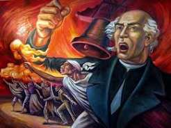
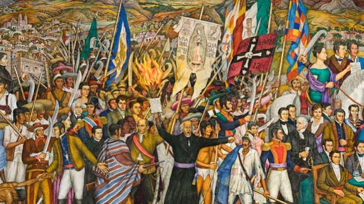
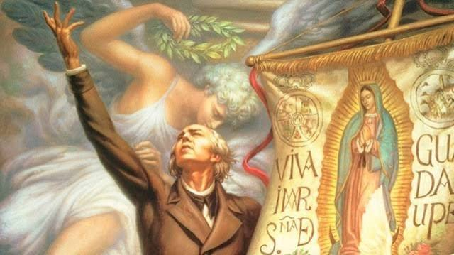
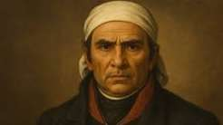
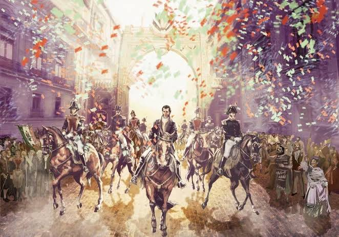

La Independencia de México fue uno de los acontecimientos más importantes de nuestra historia. Fue un movimiento que comenzó en 1810 y terminó en 1821, cuando México dejó de estar bajo el dominio español y se convirtió en una nación independiente.
Miguel Hidalgo y Costilla inició el movimiento de Independencia haciendo un llamado al pueblo para levantarse contra el gobierno español. Este acontecimiento es conocido como el Grito de Dolores y marcó el inicio de la lucha por la libertad de México.

Un grupo de personas comenzó a organizar reuniones secretas para planear un movimiento contra el gobierno español. Entre sus participantes estuvieron Miguel Hidalgo, Ignacio Allende, Juan Aldama y Josefa Ortiz de Domínguez.

Después del inicio del movimiento, Miguel Hidalgo reunió a miles de personas para luchar por la Independencia. Uno de los acontecimientos importantes fue la toma de la Alhóndiga de Granaditas en Guanajuato.

Después de la muerte de Hidalgo, José María Morelos continuó la lucha por la Independencia. En 1813 organizó el Congreso de Chilpancingo y presentó el documento llamado Sentimientos de la Nación, donde expresó sus ideas para construir un país libre.

Después de muchos años de lucha, el Ejército Trigarante, encabezado por Agustín de Iturbide, entró a la Ciudad de México. Este acontecimiento marcó la consumación de la Independencia y el fin del dominio español.

La Independencia de México fue un acontecimiento fundamental porque permitió que nuestro país se convirtiera en una nación libre. Gracias a la participación de muchas personas, hoy recordamos esta lucha como parte importante de nuestra historia.